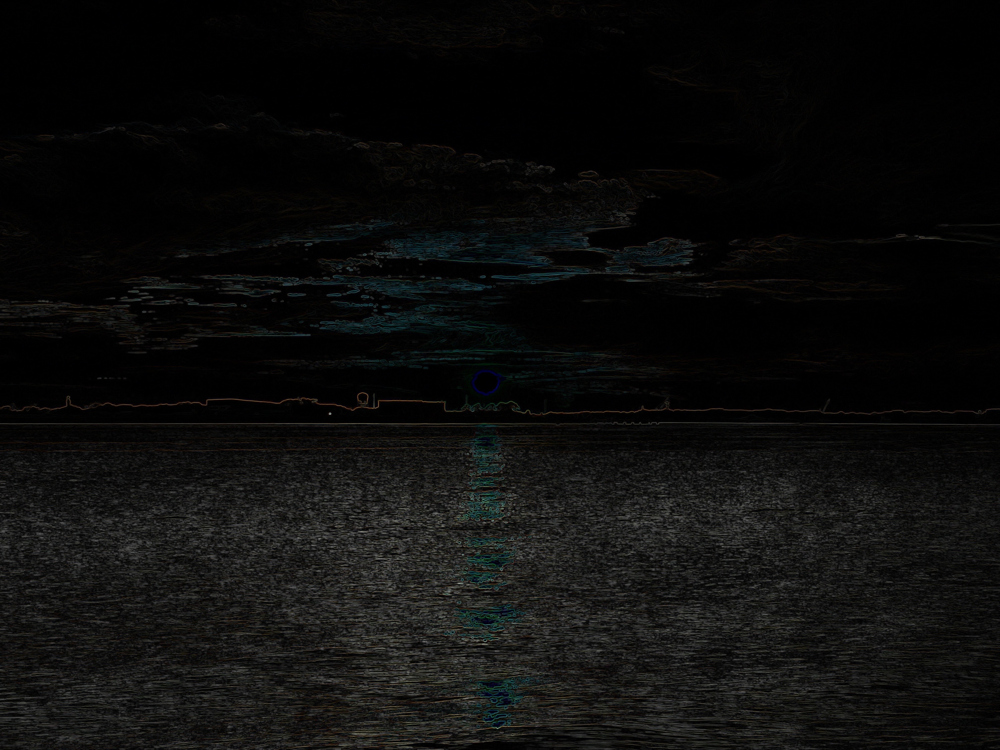
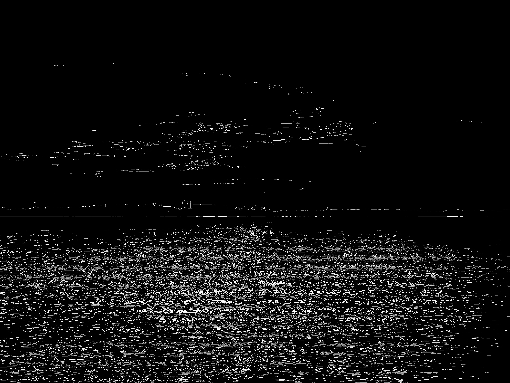
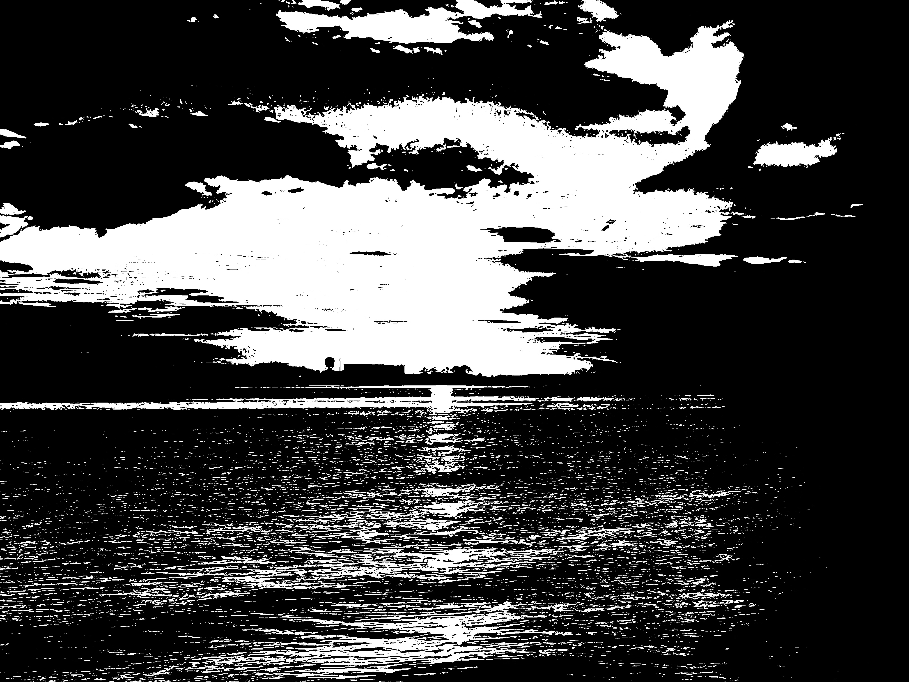

A Python + OpenCV project showcasing 16 essential image-processing filters for computer vision learning and experimentation.
This project demonstrates foundational image-processing techniques using Python and OpenCV. Each filter includes documentation, sample code, and visual results to support hands-on computer vision learning.
Install dependencies:
pip install -r requirements.txt
Run a filter demo:
python main.py --filter gaussian --input assets/sample.jpg
List all filters:
python main.py --list



opencv-filters/ │── filters/ │── assets/ │── main.py │── README.md │── requirements.txt